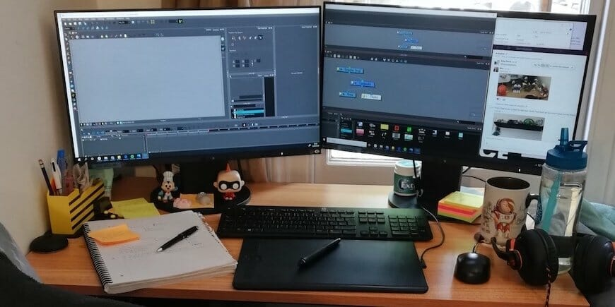
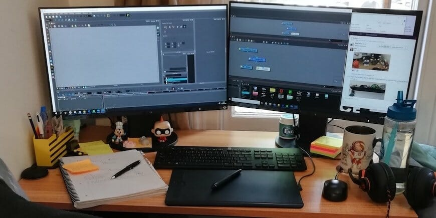

A b o u t - M e
Hello everyone! As of today, I am 19 year old working to become a productive member of society. I'm always trying to learn new things and take on new challenges. If there's one thing you can always depend on me to for, it's my ability to find information. I tend to work really well on my own, but when it comes to group work, I what they call "The Human Search Engine". I have really good memory and one of my biggest strenthgs lie in quick math.
 
